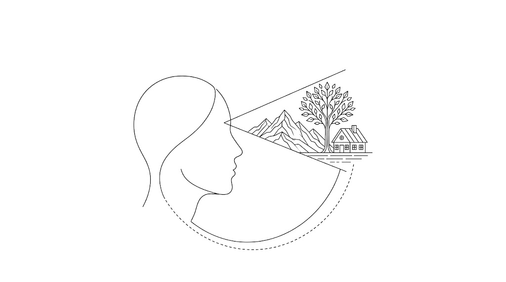
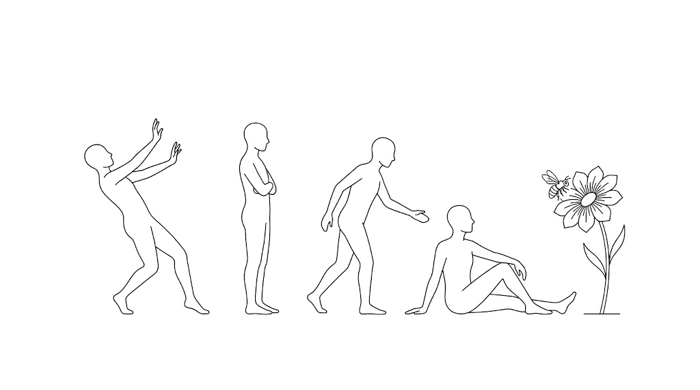
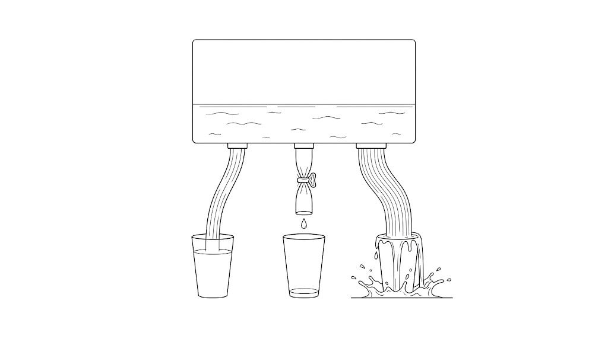

我們都以為自己是先感覺到世界、再對它反應。Lisa Feldman Barrett 說順序是反的：大腦一直在預測下一刻該做什麼動作，你所經驗到的畫面、聲音、情緒與疼痛，是那些預測的結果，不是原因。這件事聽起來抽象，但它一路推下去會碰到三個非常具體的東西：為什麼你講道理說服不了自己、為什麼「改變自己」得靠行動而不是靠想通、以及為什麼你根本沒有力氣改變的時候，問題常常不在心理而在代謝。
Barrett 是被引用數排前 0.1% 的心理學家，但這場訪談混了三種不同硬度的東西：已被廣泛接受的生理學、她自己那套仍在爭論中的理論、以及單一研究撐起來的數字。所以下面每一段標了層級。【共識】＝主流神經科學與生理學已接受，可以當事實用。【假說】＝她自己的理論立場，領域內仍有對立學派，當一個角度看、別當定論。【單一研究】＝出自一項研究的數字，方向可以參考、精確值別拿去算。【個案】＝她個人或單一個案的經驗，她自己在訪談裡兩次聲明那不是醫療建議。
Barrett 的職業起點不是情緒，是「自我」：人怎麼看待自己、自尊怎麼運作。她需要把情緒當成一個可測量的結果變項，於是想找出一個客觀的辦法，判斷某人現在是不是在生氣。她找不到。整場訪談的所有結論，都是從這個找不到開始長出來的。
這篇不照影片時序整理，而是按她的論證主線走。那條線大致是：情緒沒有客觀特徵 → 因為大腦不是在偵測而是在建構 → 建構的方式是預測 → 所以意義與身分都是行動的產物 → 所以改變要靠餵預測誤差 → 但吸收預測誤差極耗代謝 → 所以大腦最根本的工作其實是管身體預算 → 而預算不是你一個人在管的。每一段開頭會先接住上一段。
01情緒沒有指紋，所以她把問題整個倒過來問▶ 10:48
她要的東西聽起來很合理：不要靠受試者自己回報（他們可能講錯），直接客觀量出「這個人在生氣」。但這個問法本身就藏了一個假設，就是世界上存在一個叫做「生氣」的客觀狀態，而且大多數生氣的例子看起來會長得差不多。
【共識】近年一項後設分析彙整了數百項實驗，只看都市文化、還沒算上偏遠文化，結果是：人在生氣時大約 35% 的時候會皺眉。也就是說另外 65% 的時候，他們的臉在做別的、而且同樣是有意義的動作。反過來，人皺眉的時候有一半不是在生氣，可能是在用力思考、可能是聽到一個很爛的笑話、可能只是脹氣。
生理指標也一樣。生氣或難過的時候，心率可以上升、可以下降、可以不動；血壓同理。她的說法是：身體裡正在發生的事，對應的不是某個情緒本身，而是大腦正在為某個特定行為做準備。
【假說】她由此推出情緒建構論：情緒沒有本質、沒有生來就寫好的迴路，是大腦當場建構出來的。這一點必須標清楚——這是她的理論立場，領域裡有一整派人（基本情緒論）持相反意見，爭論了三十年還沒結束。她在訪談裡直接說「你根本沒有情緒迴路」，那是她的主張，不是教科書結論。
但接下來的整條推論不完全依賴這個爭議點。她真正做的事，是把問題倒過來問：與其問「情緒是什麼、它在腦裡哪裡」，不如問「我們這種大腦到底能做什麼、平常在做什麼，而它做的事怎麼在我們的文化裡被說成想法、感受、知覺跟行動」。
02大腦不在反應，它在預測▶ 13:55
承上，如果大腦不是在偵測情緒，那它在幹嘛。她的答案是：預測。
【共識】你的主觀感覺是「感知 → 反應」：我聽到一句話，然後我對它有反應。實際運作是反過來的。此刻你的大腦處在某個狀態，它正在調出跟這個狀態相似的過去經驗，用來預測下一刻該做什麼動作——眼睛要不要動、心率要不要上升、呼吸要不要改變、血管要擴張還是收縮、要不要準備站起來。而這些動作準備的訊號會被複製一份，變成「你將會看到、聽到、聞到、嚐到、想到、感覺到什麼」的預測。
她的說法是：你先行動，然後才感知。不是感知然後反應。

大腦先投出預測（粗） 感官只回傳誤差修正（細）幾個她給的例子，每一個都可以自己驗證：
- 喝水：你很渴，灌一大杯水，幾乎立刻就不渴了。但水真的被吸收進血液、傳訊號到大腦說「不缺水了」要花大約 20 分鐘。你不渴的那一刻，是大腦根據幾百萬次經驗預測出來的。
- 想像一顆青蘋果：她要主持人閉眼想像咬下去的脆聲和味道。如果這時掃描他的大腦，會看到視覺皮質與聽覺皮質的活動改變——即使眼前沒有蘋果、耳朵沒聽到聲音。主持人當場說自己開始分泌口水。她補一句：你每次坐下要吃飯，大腦都會提前叫唾液腺加工。
- 咖啡頭痛：咖啡因會讓血管收縮，而大腦要維持血流穩定。所以如果你每天早上八點喝，大腦會在七點五十五分左右先把血管擴張起來等那個收縮。那天你沒喝，就只剩下擴張，於是劇烈頭痛。她說任何規律使用、會影響生理的東西都是這樣。
- 鬧鐘響前五分鐘醒來：同一個機制。
這裡有一個直接接得上訓練的推論。你練同一套動作練久了，會變快、變準、而且燒更少熱量，因為大腦預測得越來越好。所謂肌肉記憶其實不在肌肉裡，是大腦對肌肉的控制變準了。所以如果你的目的是「效率」（跑得更快、球打得更好），重複練是對的；但如果你的目的是「消耗」，重複練反而在跟自己作對——這時要的是間歇，是有人每 30 秒喊一組你猜不到的動作，讓大腦預測失準、必須臨時調整，你才會多燒熱量、才會把自己推出恆定調節的平衡再拉回來。
- 世界先給訊號，我才有感覺
- 情緒是被觸發的
- 我是被環境推著走的
- 要改變，就要說服自己想通
- 大腦先準備動作，感覺是下游
- 情緒是當場建構的
- 我有一部分在做這件事
- 要改變，就要餵新的經驗
03創傷不在事件裡，在記憶與當下的關係裡▶ 24:13
承上，如果每一刻的經驗都是「記憶的過去」加上「感官的當下」組合出來的，那創傷就不可能只住在事件裡。這一段是整條線第一次撞到真實的人生問題。
她的說法是：創傷不是發生在世界上的一件事，也不是全在你腦裡；它是過去與現在之間那層關係的性質。同一件不幸的事，對某個人不構成創傷，因為他沒有拿過去的經驗把它理解成創傷；而對另一個人，某件旁人眼中的日常小事，卻連上了一整串很痛的記憶，於是對他就是創傷。
【個案】她引一位 Emory 大學人類學家記錄的個案：一個叫 Maria 的少女，生活在一個「男人對女人動手」被視為常態的文化裡。繼父會打她，她不喜歡，但她把這件事理解成「這跟我無關，這是他們男人的樣子」。她睡得好、成績正常、有朋友，沒有任何創傷徵兆。
然後她看了 Oprah 的節目。節目上一群女性談自己被伴侶或父親施暴的經歷，她認出那些描述跟自己的處境在物理上是一樣的，也看到那些人表現出創傷的症狀。從那之後，她開始睡不著、成績掉下來、無法專心、社交退縮。
Barrett 的解讀是：身體事件完全沒變，變的是她賦予這些事件的意義——從「這是他們的問題」變成「這是因為我是誰，所以他這樣對我」。而她也從別人身上學到了「遇到這種事應該怎麼反應」。這裡要留意分寸：這是一個個案研究，不是能推廣的通則，她拿它來說明機制、不是拿它來否定任何人的創傷。
她在訪談裡兩次停下來把話講死，因為這裡最容易被誤讀成怪罪受害者：責任（responsibility）不等於過錯（culpability）。她沒有說任何人該為發生在自己身上的事負責。她說的是——有時候在人生裡，你得負責改變某件事，不是因為那是你的錯，而是因為只有你能改。
接著她把來源再放大一層：你的預測不只來自你的親身經驗。你看的電視、讀的書、看的電影、跟人的對話，全都會變成預測的材料，這叫文化傳承。很多我們以為天生內建在大腦裡的東西，其實是這樣一代一代傳下來的。她舉的對照是：十九、二十世紀的探險家到北極圈很快就死了，因紐特人卻活得好好的，差別在於後者繼承了一整套文化知識。
04你沒有恆久的身分，你就是你此刻做的事▶ 36:29
承上，如果意義是你賦予的，那「我是誰」這件事也逃不掉同一套邏輯。這一段是整篇最反直覺、也最有實用價值的地方。
她拿手上的杯子當例子。這個杯子的意義不是「它是金屬做的、有多高」那種字典式的特徵清單。它的意義是此刻我拿它來做什麼。它可以是喝水的容器、可以是武器、可以是花器、可以是量杯。所以意義不在杯子裡，也不只在她腦裡，而是在兩者的交易關係裡。她甚至說連「這是固體」這件事都不在物體裡——是因為你有這種身體、這種構造，你才會把它經驗成固體。
推到人身上就是：你沒有一個持續不變的身分，你是你在行動當下的那個人。而行動＝記憶的過去（大腦拿來預測的材料）＋感官的當下。這件事之所以感覺不到，是因為它發生得比眨眼還快、完全自動。但它還是在發生，而這代表你有一部分在控制它，也就有一部分要為被建構出來的意義負責。
所以想改變你是誰、改變你的感受、改變你對別人的影響，只有兩條路：
- 回頭改變過去的意義，讓你記得的方式改變、未來的預測就跟著改變。這就是心理治療在做的事，也是凌晨兩點跟朋友那種掏心對話在做的事。她說這條很難，而且常常沒什麼用。
- 在現在刻意製造新經驗。既然你現在經驗到的東西會變成日後預測的種子，那你就可以現在就投資去建立新的經驗：接觸新的想法、認識跟你不一樣的人、像練任何技能一樣去練習某種特定的經驗。練久了，它會變成自動的預測。
主持人把杯子的例子接下去：與其回頭說服自己「杯子不只是杯子」，不如現在就去摘幾朵花插進去，直接在當下建立一個新模式。Barrett 說對，而且要注意順序——下一次你走近一張放著銀杯的桌子，你的大腦會先開始準備「去拿花」的動作，然後你才會想到「喔對，這可以當花器」。
這是整篇最需要記住的一句：不是你想什麼決定你感覺什麼，是你準備做什麼決定了你的想法與感受。意義是行動的結果，不是行動的原因。
05改變的方法：給自己劑量化的預測誤差▶ 44:11
承上，既然行動先於意義，那具體怎麼做。她用自己怕蜜蜂當例子，而且這個例子的重點在於知識完全沒有用。
她五歲時被蜜蜂螫過，留下了恐懼。她是園藝愛好者，懂很多蜜蜂的演化生物學。但只要有蜜蜂靠近，她的第一反應還是跑或僵住。她說：我可以一直跟自己講道理講到天荒地老，沒有用。
能用的方法是給自己下預測誤差的劑量——用某種會改變她實際動作的方式去跟蜜蜂互動，動作改變了，經驗才會改變。而且不能一次到位：一開始就穿防護衣去養蜂場工作會直接壓垮她。所以是分級的——這次不跑，站著看；下次靠近一點；種一些蜜蜂喜歡的花把牠們引過來，讓自己能坐在旁邊聽牠們嗡嗡作響；最後，她刻意讓自己被螫了一次。

舊預測：蜜蜂＝危險，拔腿就跑 每次只靠近一小步，直到能坐在牠旁邊她補了一個機制細節，解釋為什麼要分級。當大腦對一個情境有一組預測時，它準備的不是單一動作，而是多個動作方案。你預測得好，方案就少；預測得糟、過度概化，方案可能有一百個，因為不確定性太大、大腦不知道該用哪一個。而感官訊號進來的作用，是從這一堆預測裡「選」出一個來完成、變成你的行動與經驗。
所以刻意暴露在一個情境裡，讓進來的訊號選不中任何一個預測，那個落差就是預測誤差。主持人猜這叫暴露療法，她說更根本的名字是——學習。所有的學習都是你吸收了沒被預測到的訊號，或者你預測了某個訊號但它沒出現。
06你選擇了被誰影響：社會傳染與那個很貴的滑手機▶ 49:47
承上，既然預測的材料來自你接觸到的一切，那你每天餵給自己什麼，就不是小事。Maria 是看了電視才長出創傷症狀的，這件事在今天有一個規模大得多的版本。
【單一研究群】她先用一組實驗說明「傳染」這個詞的真正意思。心理免疫學家 Sheldon Cohen 做過一系列研究：把受試者隔離在旅館房間，給每個人鼻腔滴入同樣濃度的病毒，控制他們睡多久、吃多少，仔細測量症狀，連擤完鼻涕的衛生紙都秤重。結果是只有大約 20% 到 40% 的人真的出現呼吸道症狀。她的結論：病毒是必要條件，但不是充分條件；另一個必要而不充分的條件，是那個人的免疫系統與大腦當時的狀態。她說痛苦也是同一回事。
接著是這一段最實用的部分：同一個生理狀態可以被建構成完全不同的情緒。不確定性高的時候，正腎上腺素等化學物質會上升、心率通常跟著上升，而我們的文化自動把這組訊號讀成「焦慮」。但完全相同的生理狀態也可以是「決心」，也可以只是「不確定」。差別在於意義，而意義就是你會採取什麼行動。
【單一研究】她舉考試焦慮的例子。嚴重的考試焦慮會讓人修不完課、畢不了業，而大學畢不畢得了業對一生的收入是幾十萬美元等級的差距。有研究訓練受試者把高激發的生理狀態理解成「決心」而不是「焦慮」，這些人學會了，然後就考得下去、修得完課。她強調過程：一開始很難、要花很大的力氣，但練、練、練，最後會變自動，就像學開車一樣。
她給的畫面是她女兒十二歲考空手道黑帶那天。女兒身高不到五呎，要跟一群十五到十八歲的壯漢對打，連考好幾天。她的師父走過來對她說：「Sweetheart, get your butterflies flying in formation.」（把你肚子裡那群蝴蝶排成隊形。）Barrett 說那句話完美——他沒有說「小妹妹冷靜下來」，因為冷靜下來反而不好。那個激發狀態是需要的、它在那裡有它的理由，雖然不舒服。他說的是：拿去用。
然後是社群媒體。她說那上面的問題是惡性的不確定性：面對面的時候我們有表情、有聲音、有一堆線索，即使如此我們也還是在猜（她特別說「身體動作不是一種可以被閱讀的語言，那是個很糟的比喻」）。而在社群媒體上訊號極少、模糊極多，你唯一能做的就是用自己的猜測去填補那些空白——而你的猜測可能很糟。
她講得更重的一句是：滑 TikTok 的人是在自願放棄自己的能動性而不自知，他們選擇了被帶著走、被影響。她自己的做法很簡單：她會出於好奇去聽各種代謝、保養品的 podcast，但大概 90% 她聽十分鐘就關掉。她說這就是身為消費者的意思，你有選擇權。人們沒意識到的是，光是「做什麼、不做什麼」，就已經在決定哪些東西會留在腦子裡，日後被自動拿來用。
07更新不了的預測，與大腦的三筆開銷▶ 1:05:18
承上，到這裡有個明顯的漏洞：如果餵預測誤差就能改變，為什麼那麼多人卡著不動。她的答案是這篇的轉折點——吸收預測誤差很貴。而最乾淨的例子是慢性疼痛。
【共識】她做過一次重大的背部手術。手術前她就知道，術後會出現一堆她從沒有過的體感——就像補完牙之後，嘴裡多了一個原本不在的東西，你的舌頭會忍不住一直去頂它，明明不該頂。她說那是大腦在覓食，在找預測誤差；找夠了它會更新預測，然後就開始忽略那些訊號，因為不重要了。她術前就先排好一套時間表，讓自己有計畫地攝取預測誤差，目的是不要發展成慢性疼痛。
【共識】慢性疼痛在這個框架下是什麼：一組沒有更新的壞預測。組織損傷已經好了，大腦還相信那裡有損傷。主持人問「所以疼痛是想像出來的？」她說那是完全錯誤的理解方式。正確的說法是——疼痛在你腦裡，視覺也在你腦裡、聽覺也在你腦裡。你不是用耳朵聽，是用腦聽；你不是用眼睛看，是用腦看，眼睛耳朵是必要的，但不是發生的地方。所以「疼痛在腦裡」不是在說你想太多，它跟看見一顆不存在的青蘋果是同一種正常現象。
關鍵在於為什麼大腦沒更新。她說：從一場代謝上很吃力的傷病中恢復時，能撥給「學習」的代謝預算本來就少，所以大腦就不更新自己了。這句話把整條線接到下半場。
【共識】她說，大腦最重要的工作不是思考、不是感受、甚至不是看見，而是調節你的身體，說白一點就是調節代謝。它在需求出現之前就預測需求並準備好去滿足它，這個機制的正式名稱是 allostasis，而她用的白話比喻是身體預算：大腦替你的身體跑一份預算，管的不是錢，是鹽、葡萄糖、氧氣、鉀，以及維持一具高耗能身體所需的一切。

總量有天花板，而且正在變低 維持生命：
最後才被砍 生長修復與學習：最先被抽乾 費力的事：
慢性壓力掛在這，
大部分的水從這流走
這份預算有三筆開銷：
- 維持生命：那些低階但不能停的基本運作。
- 生長與修復：長高要更多細胞；學東西要增厚髓鞘、長出更多受體。
- 一切費力的事：工作、上健身房、早上把自己從床上拖起來、學新東西、應付不確定性。她說我們稱為「壓力」的東西，本質上就是大腦預期到一筆大的代謝支出。
而最關鍵的一句是：你一天能產生的能量有固定的上限。會落在一個範圍內，但那個範圍有天花板。所以如果心理社會壓力吃掉很多、或某個疾病吃掉很多，剩下能做別的事的預算就少了。這時大腦會做一件很合理的事——削減成本。
08預算破產長什麼樣：憂鬱、發炎，還有壓力怎麼變成體重▶ 1:12:26
承上，如果大腦在預算不夠時會削減成本，那把憂鬱的症狀攤開來看會發現什麼。
【假說】她的實驗室把憂鬱看成代謝問題。憂鬱的症狀有兩組：一組是削減成本的樣子——疲勞、專注困難、對所處情境不敏感；另一組是成本增加的樣子，例如約 70% 的憂鬱者有發炎問題，而免疫系統是非常昂貴的系統，長期的全身性發炎等於帳上永遠掛著一筆稅，什麼都比它該有的成本更貴。這個「憂鬱有代謝基礎」的方向在近年被稱為代謝精神醫學，正在快速發展，但還不是定論。
【單一研究】接著是這集傳播最廣、也最需要打折的一個數字。有研究顯示：如果你在吃完一餐後的兩小時內遇到社交壓力，你的身體代謝那餐的效率會變差，效果約等於你多吃了 104 大卡。而且連好的脂肪也會被當成壞脂肪代謝、傾向被儲存。她順手把它乘開：如果每一餐都多 104 大卡、持續一年，大約是 11 磅（約 5 公斤）——也就是說在高壓環境待一年、吃的跟去年一模一樣，你會胖 5 公斤。這個換算是訪談現場的口頭外推，方向值得記住，精確數字別拿去算。
【假說】然後是這集對通俗神經科學最直接的一次修正。她說「血清素是快樂化學物質、多巴胺是獎賞化學物質」這種講法「簡化到連錯都稱不上」。她的說法是：兩者本質上都是代謝調節器。多巴胺在某些神經元裡會在懲罰時上升；血清素在控制實驗裡的作用之一，是讓動物在「結尾沒有立即代謝報酬」的情況下仍能去覓食、去活動、去學習。所以現在許多神經科學家傾向把多巴胺看成「產生努力所必需」的化學物質，不管那是體力上的努力還是學習這種心智上的努力，而不是特定跟獎賞綁定。
她也提到憂鬱症有皮質醇失調，而皮質醇本身就是代謝性的化學物質；SSRI 這類抗憂鬱藥作用在血清素上，而血清素是代謝調節器。她的結論不是「憂鬱就是代謝病」這麼簡單，她說真正的問題是：這麼多代謝影響混在一起，什麼樣的組合會把一個人推進憂鬱狀態。
最後是主持人自己歸納、她認可的那一條——這是全篇最容易直接用的一句：當你心情很差，你通常會往兩個方向找原因，不是「這世界哪裡有問題」就是「我哪裡有問題」。可能真的有。但最有可能的是身體預算出了問題。而且就算世界真的有問題，你把預算顧好也比較有本錢去處理它。
09她替女兒做了什麼（她自己說：這不是處方）▶ 1:18:30
承上，這一整套框架不是紙上的。她女兒在高中時重度憂鬱，而她處理的方式就是照著「身體預算」這條線去做。這一段是整篇最具體、也最需要小心引用的部分。
【個案】女兒原本是個外向、朋友多、八歲就在玩基礎代數的孩子。十年級時變成：退縮、數學拿 D、無法專心、睡不著、非常痛苦。Barrett 說一開始他們以為她只是懶——不想做任何事、整天待在房間、想把所有活動都退掉，他們的反應是「振作一點」。
讓她意識到不對的，是記憶。女兒記不住他們前一天講過的話，也講不出當天發生了什麼細節，只能講很模糊的大意。她說這是憂鬱的一個徵兆：失去對當天細節的情節記憶，資訊沒有被固化下來，所以事後想不起來。
【單一研究 · 相對風險】其中一條線索是女兒有嚴重經痛，而常見處置是服用避孕藥（確實有效）。Barrett 後來讀到一項百萬人規模的流行病學研究：年輕女性服用避孕藥，發生重度憂鬱發作的機率上升約 40% 到 70%——雌激素加黃體素的合併型約 40%，副作用較少、因此很多年輕女性選用的單一黃體素型約 70%。她說她記得自己讀到那篇時人在哪裡，當場打給小兒科醫師說「她今天就停藥」。這裡要看清楚：這是相對風險的上升，不是絕對機率，而且那是她當年讀到的單一研究。她自己也補了一句：這件事其實已經被知道很久了，只是大眾沒有相信科學（她引 Naomi Oreskes 的《Why Trust Science》）。
【個案】然後是那套日常。她強調這是她和女兒一起設計的，而且女兒必須自己決定要被幫助——她試過，你沒辦法強迫一個青少年做任何事：
- 晚上七、八點後不看螢幕：視網膜裡有一群神經節細胞負責調節晝夜節律，剛好對螢幕的波長敏感。晚上看螢幕，等於告訴大腦現在是白天，自己給自己製造出一個晝夜節律障礙，睡眠週期就穩不下來。而深睡是清除代謝廢物、固化白天學到的東西的時段，睡不夠，預算問題只會更糟。
- 離開社群媒體：目的是減少社交上的不確定性與壓力。
- 5:30 一起吃早餐：她每天陪女兒起床、做早餐、坐著陪她吃完，確保吃的是真食物而不是那種偽食物。
- 重新開始運動：走長距離，加上器械皮拉提斯。她特別解釋為什麼是這種：運動的作用是把你推出代謝平衡，讓大腦練習把自己拉回來，提升生理系統的韌性。所以她要的是接近間歇性質的東西（會把人操到失衡、然後喝水吃點好的、系統學會變得更有彈性），不是「反覆練同一套網球動作」那種把效率練上去的訓練。這跟第 02 節那條原則是同一件事。
- 營養與發炎：高 omega-3、低 omega-6；在醫師同意下，飯後服用每日一顆嬰兒阿斯匹靈以降低全身性發炎。
- 睡前一小時的家人共處：他們把小時候的睡前共讀找回來。一起讀書、或就是坐著聽女兒講她那天在學校遇到的事，有些事很糟糕，而 Barrett 說她只能共情。
她說最後這一項對她自己最難。她一直想去修理問題，而她得動用自己當治療師的訓練，才做得到只是坐在那裡承接對方的痛苦、只共情，而不是「你就這樣做、這樣做、這樣做」。原因是：只要她做了共情以外的任何事，女兒就會覺得自己沒被聽見。她說她到現在有時候還是會沒做好。
她在這一段的前後兩次聲明：我不是醫師、不是精神科醫師，這不是給你孩子的建議或處方，我只是告訴你我當時作為一個讀過文獻的人做了什麼。
女兒康復了。而她認為女兒現在狀態好的關鍵，不是不再有情緒起伏，是她把自己的情緒讀成身體的儀表板，而不是讀成一個心理問題。
10我們是彼此神經系統的照顧者▶ 1:29:11
承上，前一段有一件事跟其他項目不太一樣：睡前共處為什麼會有生理效果。這一段是這篇最後一塊拼圖——身體預算從來不是你一個人在管的。
她的說法很直接：人類是社會性動物，我們在代謝層面互相影響，可以替對方的帳戶增加存款、也可以增加稅賦。而且這件事跟你有沒有意識到、有沒有打算這麼做完全無關，效果照樣發生。
她舉的證據都很具體：
- 【單一研究】她一位前博士後研究員測量母嬰的葡萄糖代謝，比較「各自單獨做一件事」與「兩人一起做」，發現依附良好的母嬰，葡萄糖代謝更有效率。她說對方在情侶身上也看到類似結果。
- 【單一研究】比較舊的研究顯示：背著背包爬坡，跟朋友一起走比跟陌生人一起走消耗的熱量更少。
- 【後設分析】如果你的社交生活裡有一群你信任、也信任你的人，平均而言你會多活好幾年。
- 【共識】語言也算。你傳幾個字給伴侶或朋友，就能改變對方的心率、呼吸速率，以及一堆化學物質與蛋白質合成。她順著這點說：言論自由很重要，但自由伴隨責任——不管你喜不喜歡，我們一直在用各種方式調節彼此的神經系統。
她把這件事收成一句很好記的話：對人類神經系統最好的東西是另一個人；對人類神經系統最壞的東西也是另一個人。差別在於是哪一個人。
這一段還藏了兩句可以直接抄走的對話技巧，是她跟已成年女兒之間的：女兒有時會說「你可以只當我朋友一下下、先不要當我媽嗎？」而她會說好，然後真的做到（她說這有時候很難）。反過來，當她自己忍不住想念幾句時，她會先開口要求：「我現在有個當媽的衝動、很想念你一件事，如果你讓我念一分鐘，我就不用再說第二次了。」她說這等於在請求對方的許可，而且她會明講「我知道這是我的問題、不是你的問題」。女兒大多數時候會說「好啦媽，你講吧」，偶爾會說「今天不要」，那她就得真的閉嘴。
11酒精：她確定知道的只有一件事▶ 1:39:12
承上，主持人問了一個直球問題：酒精會不會影響身體預算，因此讓人更難做別的事、也更容易憂鬱。她的回答值得完整看，因為她在這裡示範了怎麼標示自己知識的邊界。
【推測】她第一句話是：我不是酒精代謝的專家，接下來是我根據我知道的東西做的外推。她說她不認為那是單一機制，而且已知存在情境效應——喝一模一樣的量，在不同情境下效果不同，她說這件事當年讓她非常震驚。
【共識】她繞回自己的地盤：人們談的「情緒調節」其實多半是心情調節。心情跟情緒不一樣，心情是意識的一種屬性、一直都在——大腦一直在調節身體，身體一直在把訊號送回大腦，這些訊號構成心情。有些時刻你會拿外在世界來理解這些訊號，那時你經驗到的是情緒；但更多時候你不會，心情就直接嵌在你對世界的知覺裡：這杯飲料真好喝、那個人很討厭、你很值得信任。
所以她說，任何會改變你心情的東西，都在改變你的代謝——鴉片類藥物也是這樣。而人們之所以成癮，往往是因為他們在調節心情、在試圖減少自己的痛苦。
【共識】最後是她唯一講得很肯定的那件事：喝酒會讓你的預測變得草率，而且你吸收不了預測誤差。也就是那段時間你學不了東西、更新不了預測，於是你的行為未必對得上你所在的情境，接下來可能替自己製造出更多下游麻煩，讓之後的預算更難管。
12診斷是描述，不是解釋▶ 1:45:49
承上，這一整套框架有一個必然的推論，會直接衝撞現在很流行的一件事——用診斷來解釋自己。
【共識】她的核心句是：診斷不解釋任何事，它們是描述。把一個診斷當成解釋，是一種心理本質論——你假設底下有某個不會變的本質在造成這些症狀，即使你根本不知道那個本質是什麼。她講得很不客氣的一句是：診斷主要的用處是拿來申報治療時數。
她用 ADHD 說明。ADHD 不是一組固定症狀，是很多種樣貌——同一個診斷底下可以有完全不同的症狀組合，因為它本來就只是描述性的；其中一些症狀還跟別的診斷類別重疊。而所謂「血清素或多巴胺造成 ADHD」的說法站不住，因為血清素有多種受體、多巴胺也有多種受體，它們在身體與大腦的不同位置做不同的事，沒有哪一個「只做一件事」。
她真正想指出的是那個被藏起來的條件。每一個「韌性的資源」和每一個「困難的症狀」都有它的情境。我們的社會有一項要求是：你必須能坐著、對同一件事維持長時間的注意力。這個要求出現得太頻繁，頻繁到我們忘記它是一個條件——而診斷正是建立在這個條件之上。她說可能存在另一些情境，在那裡「注意力不長時間停在同一件事上」反而是優勢。
所以她給的那句話是：你沒有壞掉，只是你跟某個特定情境的適配被判定為不合。她補了一句，這聽起來可能像在打太極，但不是——把情境放到前景來，是務實，不是立場。
【單一研究/後設分析】同一節裡還有一個常見說法被她修正：微笑能不能讓你變快樂。她的回答是後設分析顯示有效果，但效果極小——小到「不是對每個人都有效、也不是每次都有效」。她說這件事被過度渲染了。順帶：人在生氣時會笑、在害怕時會笑、在盤算怎麼幹掉敵人時也會笑，這正好呼應第 01 節「表情沒有指紋」。
13收束：你是你做的事，不是你做過的事▶ 1:59:32
訪談的收尾是一個上一位來賓留下的問題（對方是少林武僧）：「如何過一個不追求得到任何東西的人生？」她的回答把整條線收回原點。
她說要記得你並沒有一個獨立於此刻之外的身分，你沒有本質。而既然你所經驗、所做的一切都是記憶的過去加上感官的當下，那要改變你是誰，只有兩個入口：
- 改變你記得什麼、你怎麼預測（第 04、05 節那兩條路）。
- 改變感官的當下——這一個比想像中好用。你可以真的站起來走到別的地方去（出去走一走）；也可以改變你注意什麼。她當場示範：你剛才沒有在注意椅子壓在你背上跟腿上的觸感，我一講你就注意到了。她說這就是正念在做的事。
然後是那句結論：沒有一個「你是誰」的本質。你就是你做的事，在此刻。而你可以改變你做什麼，也就能改變你經驗到什麼。
主持人接了一句很到位的話收尾：我們很容易掉進「我就是我做過的事」這個陷阱裡；而他更喜歡「我是我做的事」，因為後者代表不管過去做過什麼，此刻他都還有做出不同決定的能動性。他也很誠實地補了一句：十分鐘後我大概就會下樓，然後又掉回那個陷阱裡。
至於她自己的意義觀：她是明確的無神論者，認為自然與大腦的複雜精妙不需要一個設計者。她說研究這些反而讓她更看重哲學，因為哲學問的是宗教試圖回答的同一批問題，而對她來說那是更好、也更自在的一條路。她給自己人生的答案是「把世界留得比我發現它時好一點」。而當她想到 legacy 時，她說那不是她發表的那堆論文，是她訓練過的人、以及那些原本不存在的實驗室。她從前教書時給自己的標準是：如果我能改變這個班上一個人的人生軌跡，就算一個，我就完成工作了。這種 legacy 最難的地方是，你永遠不會知道自己的影響是什麼。
這篇是「大腦怎麼運作」那組筆記的地基層，而且它跟三篇既有文章直接衝突，衝突處正是它最值得讀的地方。專注不是靠紀律，是保養好你的多巴胺用「多巴胺水庫」解釋動機，Barrett 則說多巴胺與血清素本質上都是代謝調節器、多巴胺是「產生努力所必需」而非獎賞訊號，兩篇一起讀會比較知道哪一層是機制、哪一層是比喻。一天重置人生與大腦重塑與顯化的神經科學都主張「先改身分、行為才跟得上」，Barrett 的因果方向相反：先有動作，意義與感受才長出來，而且她認為根本沒有恆久的身分可改。創傷不是發生的事，是留在身體裡的東西與這篇有一個漂亮的張力——兩人都說創傷不等於事件本身，但 van der Kolk 說它存在身體裡、要由下而上處理，Barrett 說它是預測與意義的建構、而且可以被文化傳染出來。另外三篇是互補的：增肌訓練原則（為什麼練同一套會越練越省熱量）、好關係與美好人生（社會支持的代謝機制）、睡不好，可能不是習慣問題（睡眠與預算的關係）。
—怎麼用在你身上
- 心情差的時候，先查預算再查心理：這是全篇最省力的一條。當天狀態爛、對人沒耐性、什麼都不想動時，先照順序問三件事——昨晚睡了幾小時、上一餐是什麼時候、水喝夠沒。她女兒康復後最重要的改變就是這個：把情緒當成身體的儀表板讀，而不是當成一個要想通的心理問題。順帶，這條也解釋了為什麼你在大訓練量的週期裡特別容易覺得專案很煩——訓練跟工作在搶同一份預算。
- 間歇 vs 穩定配速，用預測腦重講一次：你反覆練的每一套動作，大腦都會預測得越來越好、於是越來越省熱量。這對比賽表現是你要的（同樣配速更省能量），對消耗是你不要的。所以配速課與間歇課的分工不只是心率區間的差別，是「讓大腦預測得更準」還是「刻意讓大腦預測失準」兩件不同的事。她替女兒選器械皮拉提斯而不是重複性運動，用的就是這個理由。
- 賽前緊張不用壓下去，改標籤就好：高激發的生理狀態本身沒有情緒，是你貼的標籤決定它變成焦慮還是決心。空手道師父那句「把你的蝴蝶排成隊形」比「冷靜下來」正確——那個激發是你需要的。她強調這要練：一開始很費力，練久了會變自動。這件事在 226 這種賽前焦慮很久的長距離項目上，值得當成一個可以練的技能，而不是一個要克服的毛病。
- 卡關的時候先動，別等想通：這是這篇對「有想法但缺執行力」最直接的答案。她怕蜜蜂，懂再多蜜蜂知識都沒用；意義是行動的結果不是原因。所以專案卡住時，正確的動作不是再想一輪、不是再讀一篇，而是做一個小到不會壓垮自己的實際動作（開檔案改一行、寫出第一段爛的），感覺會跟在後面到。這跟你既有筆記裡「先改身分再改行為」的說法方向相反，我認為 Barrett 這版對你更有用，因為它不需要你先相信任何事。
- 把「劑量」這個詞記住：她刻意讓自己被蜜蜂螫，但那是走了好幾階之後才做的。任何你想改掉的反應（怕開口、怕被看見、怕某類任務），要的是一階一階往上的暴露，不是一次到位。一次給太多，系統只會關機、不會學習。
- 資訊來源就是預測的原料：她自己聽 podcast 大概 90% 十分鐘就關掉。你餵給自己的東西會變成日後自動被調用的預測，這件事沒有中立選項——不做選擇也是一種選擇。
- 兩句可以直接抄的對話句型：想跟人講一件對方不想聽的事情時，先要許可：「我現在很想跟你講一件事，你讓我講一分鐘，我就不用再說第二次。」以及反過來——當對方在講他的難處時，只共情、不修理。她說這是她最難學會的一件事。
- 酒精那段的機制，不是勸戒：她自己說她不是酒精代謝的專家。唯一講得肯定的是喝了之後預測會變鬆、吸收不了預測誤差。實務上的意思很窄：那段時間不適合拿來學東西或做需要更新判斷的決定，跟喝多少、該不該喝是兩回事。